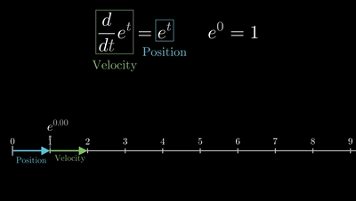
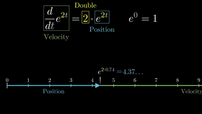
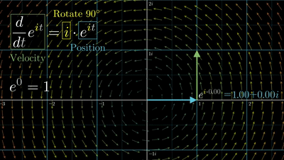
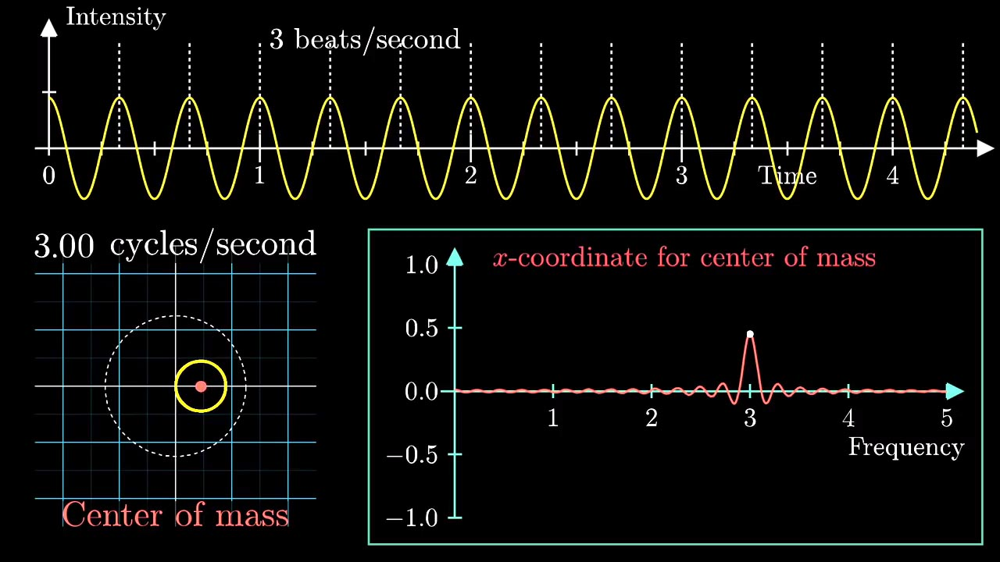

欧拉公式 Euler's formula
将看作时间，看作质点的速度，看作质点的位置。此时速度与位置符号相同。
{kind=link}

{kind=link}

此时速度与位置方向相反。质点随时间趋于原点。

在复平面中，速度与位置方向垂直。质点不断旋转。
{kind=link}

得到欧拉公式：
当 时：
傅里叶级数 Fouriter Series
- 傅立叶变换如何理解？美颜和变声都是什么原理？李永乐老师告诉你 - YouTube
- But what is a Fourier series? From heat flow to drawing with circles | DE4 - YouTube
任何周期函数都可以用正弦函数和余弦函数构成的无穷级数来表示（选择正弦函数与余弦函数作为基函数是因为它们是正交的）
如果把一副二维矢量图(svg)看作是一个复平面的函数，则这个函数可以用多个旋转的圆复合来表示。（不知道咋表达orz）是一个复数，表示这个圆的初始状态（半径，方向）。表示这个圆的旋转速率。

傅里叶变换 FT
傅里叶变换 （FT） 是一种数学变换，它将函数分解为频率分量，频率分量由变换的输出表示为频率的函数。最常见的时间或空间函数被转换，这将分别根据时间频率或空间频率输出函数。（将信号的时域转换为频域）。
可以将一个周期函数分解成多个正/余弦函数。

将一个周期函数绕成一个圈，观察这个圈在不同频率下的质心位置。

这个质心位置在某频率表现特殊。
{kind=link}

在多个混合的周期函数中，这个现象也成立。

我们把这个绕圈操作视作在复平面下逆时针旋转。根据欧拉公式就是将原函数后乘以。就把时域转换成了频域。
如果把一个非周期的函数视作是一个周期无限大的函数：
逆傅里叶变换 IFT
将旋转后的函数再顺时针旋转回来，就是后乘以：就把频域转换成了时域。
快速傅里叶变换 FFT
-
[The Algorithm That Transformed The World - YouTube](https://www.youtube.com/watch?v=Ty0JcR6Dvis&ab_channel=Reducible)
-
The Fast Fourier Transform (FFT): Most Ingenious Algorithm Ever? - YouTube
它能够将计算DFT（离散傅里叶变换）的复杂度从只用DFT定义计算需要的，降低到，其中为数据大小。